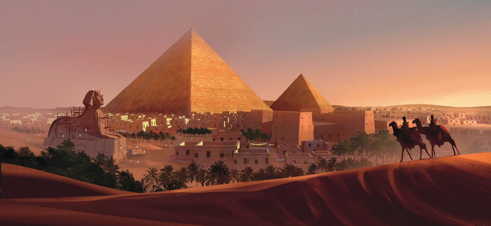

|
|
Piramida lui Keops din Giza
Marea Piramidă din Giza (numit şi piramida lui Kheops) este localizată pe Platoul Gizeh - oraşul Gizeh, necropola anticului Memphis, actualmente parte a capitalei Cairo. Aceasta este singura minune a lumii ce nu necesită descrieri ale istoricilor din antichitate sau ale poeţilor. Este singura minune a lumii asupra căreia nu se fac speculaţii referitoare la formă, mărime şi prezentare. Este cea mai veche şi totuşi singura care a supravieţuit timpului. Contrar părerii generale, numai Marea Piramidă a lui Kheops, nu toate cele trei Mari Piramide, se află pe lista celor şapte minuni ale lumii antice. Marea Piramidă din Gizeh a fost cea mai înaltă construcţie din lume mai mult de 43 de secole, până în secolul al XIX-lea în 1889 când a fost construit Turnul Eiffel. Avea, la început, 146 m (azi 138 m) înălţime, latura de 227 m şi cuprinde 2.521.000 m cubi de piatră. Feţele piramidei erau placate cu plăci şlefuite din calcar. A fost construită de faraonul Khufu din a IV-a Dinastie, în jurul anului 2560 î.Hr. pentru a servi drept mormânt acestuia. Tradiţia construirii de piramide a început în Egiptul antic ca o sofisticare a ideii de "mastaba" (platformă) ce acoperea mormântul regal. Mai târziu, au fost folosite mai multe "mastaba", fapt dovedit de primele piramide, cum este Piramida în Trepte a Regelui Zoser (Djoser), construită de faimosul arhitect egiptean, Imhotep. Potrivit lui Herodot, construcţia ei ar fi durat peste douăzeci de ani şi la ea ar fi lucrat 100.000 de oameni. Întâi a fost pregătit locul de amplasare şi au fost transportate blocurile de piatră. Atunci era folosit un proiect pentru exteriorul piramidei, o şlefuire ce a dispărut de-a lungul timpului. Deşi încă nu se ştie exact cum au fost aşezate blocurile de piatră, au existat mai mult teorii: una din aceste teorii se referă la construirea unei rampe drepte sau în spirală, ce era înălţată pe măsură ce se ridica piramida. Această rampă, îmbrăcată cu noroi şi apă, uşura transportarea blocurilor împinse (sau trase) la locul lor. O altă teorie sugerează că blocurile de piatră erau puse la locul lor folosind pârghii lungi. Când au cucerit Egiptul, în anul 641 e.n., arabii au găsit piramida intactă şi după ce au deschis-o, căutând comoara lui Keops, sarcofagul era gol. De-a lungul istoriei, piramidele de la Gizeh au stimulat imaginaţia oamenilor, aceştia numindu-le "Grânarele lui Iosef" sau "Munţii Faraonului". Când Napoleon a invadat Egiptul în 1798 mândria resimţită de el atunci a fost exprimată în faimosul citat: Soldats! Du haute de ces Pyramides, 40 siècles nous contemplent ("Soldaţi! 40 de secole ne privesc din vârful piramidei"). În ultimii ani s-au mai descoperit încă trei sau patru camere, în apropiere de camera funerară, într-una fiind corabia regală, iar celelalte sunt în curs de explorare, dezvăluind poate ultimele secrete ale Marii Piramide: tezaurul şi mumia faraonului. Astăzi, Marea Piramidă este inclusă, împreună cu celelalte piramide şi cu Sfinxul, în regiunea turistică a Platoului Gizeh. De asemenea, în zona aceasta se află muzeul ce găzduieşte misterioasa Barcă Solară, descoperită abia în 1954, lângă partea de sud a piramidei. Această barcă se presupune că a purtat corpul lui Khufu în ultima sa călătorie, înainte de a fi înmormântat în piramidă. Se poate de asemenea să fi servit şi ca mijloc de transport în viaţa de apoi, conform credinţelor antice egiptene.
×
|